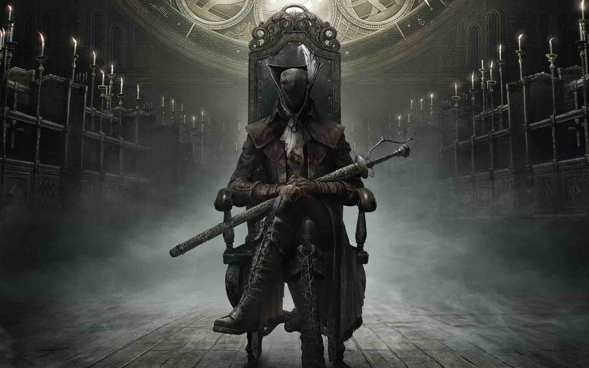

Oh Zev ©
Zevs posture is too good
I strive to have posture as good as him
I am not worthy to have posture that good
Zev, i wish for you to bless me with your godly posture
Zev your posture and Ebriatis are both godly
Ascension is your DESTINY
Zev teach me that PPP
THE IRON LORDS WILL RISE
Fear the old blood By the Gods lawrence, Fear it. FTOB

Your Guide to Gitting Gud
Non Great one Bosses
- Cleric Beast
- Father Gastoine
- vicar Amelia
- bloodstarved beast
- Witches of Hemwick
- Martyr Logarius
- Celestial Emmisery
Great Ones
- Ebriatis
- Mergo
- Amygdala
- Oedin
- The Moon Presence (Paleblood)
Semi/Beckoner Great One Bosses
- Shadows of Yarhnam
- The First Hunter
- Mergos Wetnurse
- The One Reborn
Favorite bosses tho
- Father Gastgoine
- martyr logarius
- Shadows of Yarhnam
Bloodborne Co-op application form
Git Gud Guide
| Big Bloaty bosses |
No Gun |
ludwig or oreo saw |
| Agile Humanoid bosses |
Pistol |
Syth |
| Just An Overall Scrub? |
Scrub Arcane Items |
More Scrubby Items |